いろんなソート
Tweetソートとは
タイトルにある「ソート」を聞いたことがあるでしょうか？Excelを触ったことのある人ならご存知かもしれません。英語の動詞であるソート(sort)は「分類する」「区分する」という意味を持ち、「並び替える」という意味で使われることが多いです。ここではプログラム上でこのソートを実行する方法について述べていきます。
用語確認など
昇順でソートする、降順でソートする、という表現がありますが、昇順は小さい順、降順は大きい順、と読み替えてください。
また、ここでは計算量、というものを使って説明をしていきます。よく用いられるのは「ランダウの記号」や「オーダー記法」と呼ばれる記法で、 や と表します。
ここで右上についている数字は累乗を表すもので、 、 といったようにその数字の分だけというなんらかの数字を掛け 合わせる、というものです(の場合もあります)。
また という対数関数を用いますが、これは 先程の累乗の逆で、 は「の何乗がになるのか」を表し、 、 となります。ざっくりと言うのであれば、桁数だと考えればよいです。 , というように整数部分が(右下の数字の位取り記数法 では)桁数-1と一致します。オーダー記法では と右下の数字を省略することが多いで す。 要するにオーダー記法というのはある値(ここでは>)の増加に対してどの程度増加するか、という度合いを表すもので、 はが2倍になると 4 倍、100 倍になると 10000 倍になる、と いうものを表します。また などは と、より大きく変化する部分のみ表記し ます。 前置きが長くなりましたが、本題に入っていきます。
総当り
すべての組み合わせを試し、昇順や降順になっていたらそれを選ぶ、という確実な方法です。
計算するのに要する時間、つまり時間計算量は です。ここで とは のことで、 , と爆発的に増えていきます。
それぞれの並びについて、小さい順に並んでいるかどうか個見て確かめるので になっています。この場合、15個程度のデータを並び替えるだけでも膨大な時間がかかります。
3個の場合で少し やってみましょう。という3つの数字を並び替えてみます。並べ方をすべて挙げると となり、昇順となっているのは、降順となっているのはでソートできました。
次は4個、と行きたいですが 個も書きたくないので省略します。とにかく総当りでは時間がかかります。
バブルソート
総当たりよりはマシなソート方法がこれで、単純なルールなのでよく紹介される方法です。 昇順でソートする前提で進めます。まず番目の数と番目の数を比べて、番目の数の方が大きければ2つの数を入れ替えます。次に番目の数と番目の数を比べて、番目の数のほうが大きければ入れ替えます。・・・というように一番目から順番に2つずつ大小を比較し大きいものを番目の 方へ持っていきます。
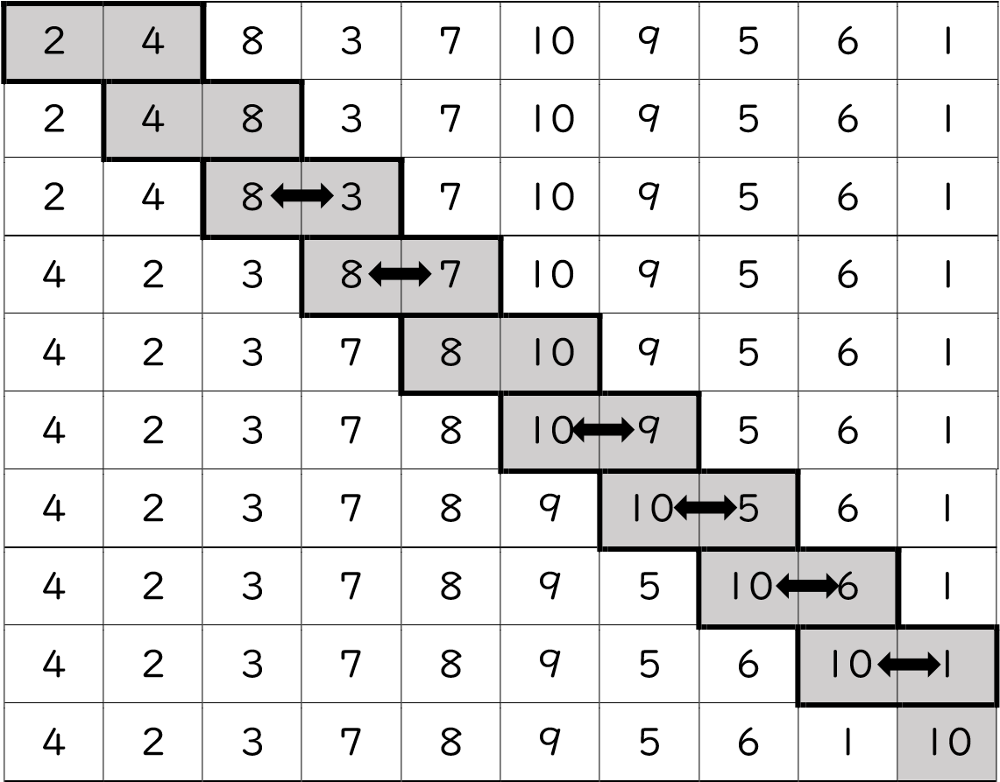これで最大値が最後に来ることになります。これを次は番目~番目に対して実行します。
すると二番目に大きい下図が番目に現れます。
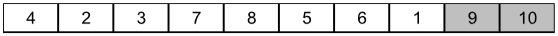このように最大値を最後の方に寄せていけば、最終的に昇順に並ぶことになります。 >個分最大値を最後の方へ寄せるので、時間計算量は です。 O(N!) に比べれば小さいですが、それでもが倍になればは倍になってしまうのでたくさんのデータになると何時間も時間がかかるようになってしまいます(このバブルソートを改良したシェーカーソートというものもあります)。
選択ソート
バブルソートと似た方針で、最小値または最大値を端に寄せていくソートです。今回は最小の要 素と最初の要素を入れ替えていく方法を紹介します。

これも個のうちから最小値を探すことを回繰り返すので時間計算量は となります。
挿入ソート
目的の要素以前がソートされている状態にしてあるとして、その要素を正しい位置に挿入していくソートです。図で見たほうがわかりやすいかもしれません。
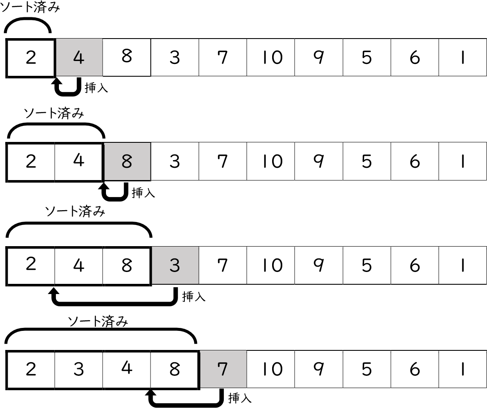回の挿入操作それぞれに を要するので計算量は となります。(二分探索と呼ばれる手法を用いると比較回数を減らすことができます。詳細は各自で調べてみると良いでしょう。)
クイックソート
これまで のアルゴリズムを紹介してきましたがここからは高速なってきます。このクイックソートは平均 で計算できます。まず、ピボット(pivot)と呼ばれる、基準の値を一つ取ります。ここでは最初の値を取ることにします。そして、ピボットより小さい値を最初の方へ、ピボット以上の値を最後の方へ寄せます。
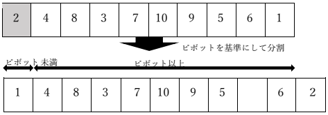そしてピボット未満の部分、ピボット以上の部分をそれぞれクイックソートします。
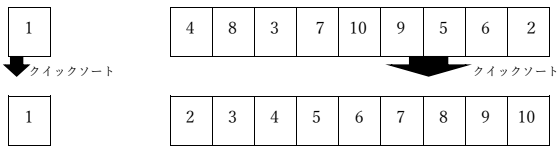このように、クイックソートの中でクイックソートを利用する、というようなものを呼び出しと言います。ただし、要素の数が1以下の場合は「ソートされている」と言えるので改めてなにかせずに打ち切る必要があります。そうでないと無限にソートしようとしてしまいます。
クイックソートはピボットの選び方によって所要時間が変化し、最悪時間計算量は O(N2) です。しかし、多くの場合においてこれは で動作し、そのため高速なソートとして知られています。
コラム：再帰
さて、クイックソートの説明の中で再帰という単語が現れましたが、これについて例を挙げて補足しておきます。
「総当り」で登場した階乗の定義を見てみましょう。
これを再帰的に定義し直してみます。
の部分は と表せるので、先程の式に当てはめると となり、 のとき なので の再帰的定義は下記のようになります。
これは「自然数について,のとき,のとき 」を表すものです。階乗の定義の中に階乗が含まれていますが、この場合の定義の中に自身、もしくはが現れない限り問題はありません。再帰sという概念はそのうち数学でも出てくると思うので、覚えておいて損はないでしょう。
マージソート
今まで紹介したソートは「与えられたデータの領域の中だけで完結する」もの、つまり「>番目の要素と>番目の要素を比較、または交換する」のみでソートが可能でした。しかしこのマージソートでは、新しく別の領域を利用しなければなりません。
まずはデータを半分に分け、片方ずつマージソートをします。
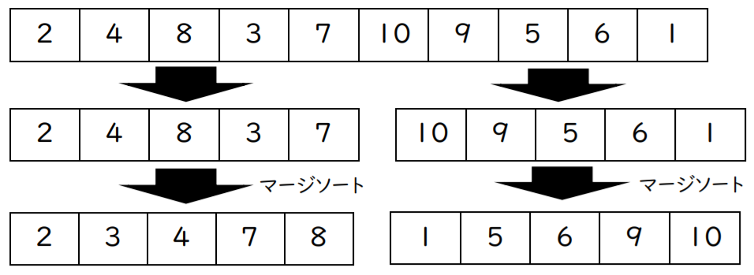そしてこの2つを「マージ」していくのですが、この時に新しい別の領域が必要になります。説明のためもともとの領域をA、用意する別の領域をBとします。
ここでのマージとは「ソートされた2つのデータを合成すること」なのですが、合成した後もソートされた状態になっているように合成します。実際に上の2つをマージしてみましょう。それぞれ先頭の要素を比較し、小さい方を領域Bに後ろから詰めていきます。
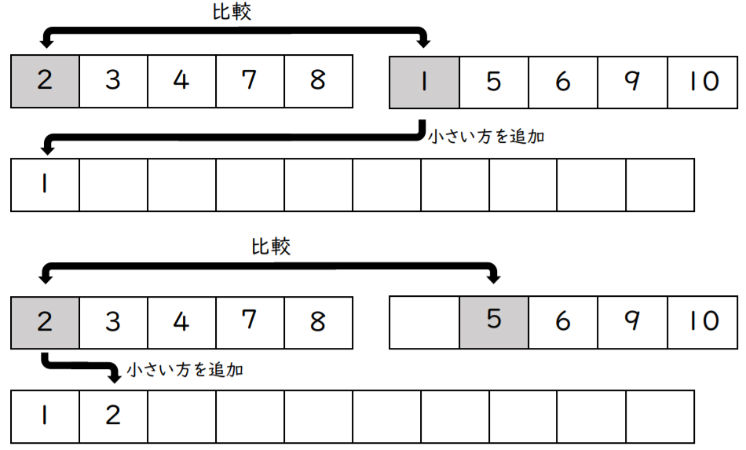このようにしてマージした後、領域Aを領域Bで上書きすればマージ完了です。
時間計算量は と高速ですが、領域Bを用意する必要があり、このような「計算時に必要となる記憶領域の容量」を空間計算量と呼び、このマージソートでは空間計算量が です。
インプレースマージソート
マージソートでネックとなる空間計算量を 、つまり外部領域を使わずにできるようにしたのがこのインプレースマージソートです。ただし時間計算量が と少し遅くなります。
別の領域を使わないインプレースマージでは、クイックソートのような工夫をします。2つに分割した領域をそれぞれ領域 とし、ピボットをとすると、それぞれの領域についてを基準に未満の要素を最初の方へ、以上の要素を最後の方へ寄せます。ここでそれらの領域をLL,LR,RL,RR とすると、 と を入れ替えます。
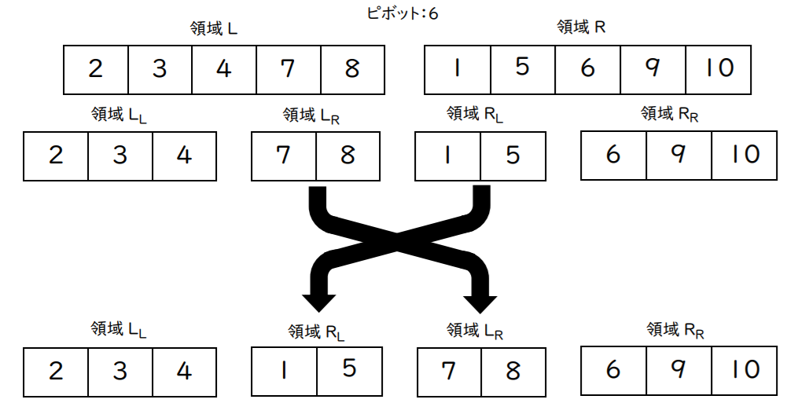そして領域 と領域 、領域 と領域 をそれぞれインプレースマージします。
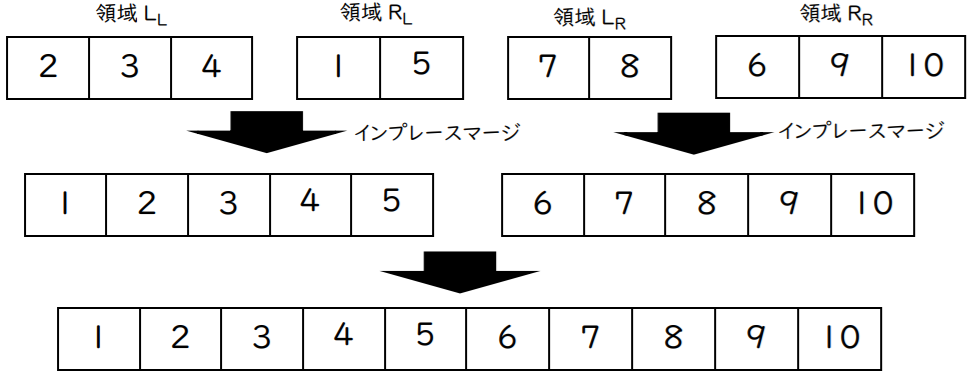このようにすることで新たに領域を用意せずともマージが可能となります。
基数ソート
基数ソートは内部でバケットソートを使うのが一般的なので、バケットソートを先に紹介します。バケットソートは決まった範囲の値しか存在しないとわかっている時に可能なソートです。例えば1 ~ 5の値しかないものをソートするとき、「バケツ」と呼ぶ新たな領域を値の種類数分、ここでは5個用意します。そして元のデータを順番に見ていき、1なら「1のバケツ」に、2なら「2のバケツ」に、といったように順番に入れていきます。全て入れ終わったら、「1のバケツ」から順に入っている値を並べていきます。
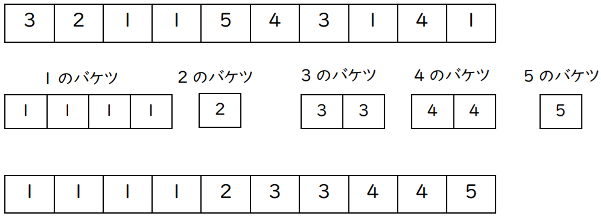バケットソートの時間計算量は、値の種類数をKとすると となります。多くの場合においてKは有限の値を取るため、時間計算量を とする場合もあります。また、最悪空間計算量も となります。
そして基数ソートとは、位取り記数法ができるもの(つまり普通の整数や小数)や文字数の決まったアルファベットのみの文字列などを要素とするデータである場合に適用できます。10進法における3桁以下の整数を例に取ってみましょう。下の位から順番に、種類数が10のバケットソートをしていきます。
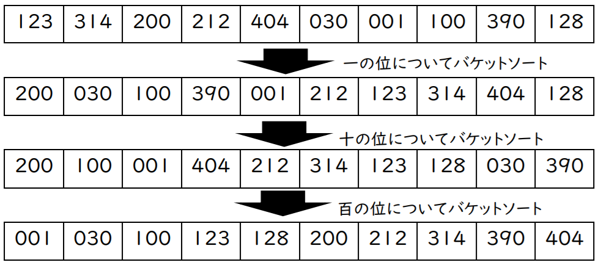各桁について値の種類数が有限なバケットソートをするので、桁数とすると、時間計算量は となります。10進数に限らず、各桁について種類の値を取る場合、時間計算量は です。
終わりに
以上有名なソートアルゴリズムをいくつか紹介しましたが、いかがでしたでしょうか。実際にソートをしてみたい人は、トランプを適当な枚数取って自分で並び替えてみると良いでしょう。ちなみに個人的に好きなソートは基数ソートです。ここで紹介したソートアルゴリズムを筆者がC++で実装をしたので、下にそのソースコードを添えておきたいと思います。もし不備や間違いなどが合った場合は GitHubのissueに投げるなどしてください。